Cany-Barville 2006, rencontre indoor Téléthon

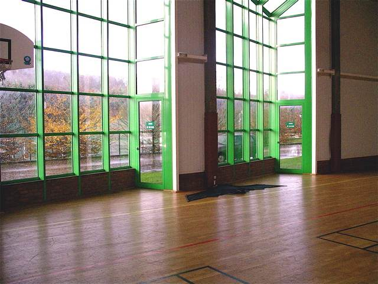
Cany-Barville, Eric Lincot m'a invité à participer au Téléthon, au programme : cerf-volant indoor. Cany-Barville, c'est entre Dieppe et Fécamp, en retrait de Veulettes qui est sur la côte. Un super gymnase, vaste et très haut avec une verrière qui donne beaucoup de lumière.

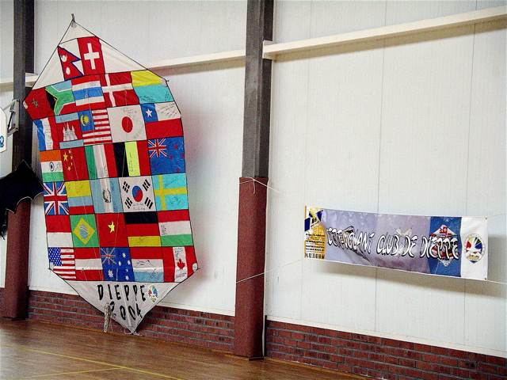
Matin, on s'installe, on décore, je monte Megoel qui décorera un côté, le CVClub de Dieppe a amené le Rokkaku international de Dieppe 2004 signé des délégations. Et aussi, on commence à s'amuser un peu...

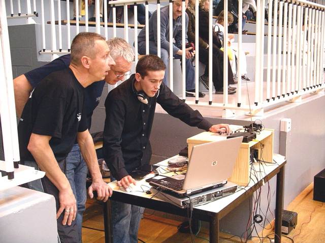
Un nouveau venu au club de Dieppe, il a amené et monté une sono, mais la salle n'a pas été conçue pour l'acoustique, ça résonne beaucoup...

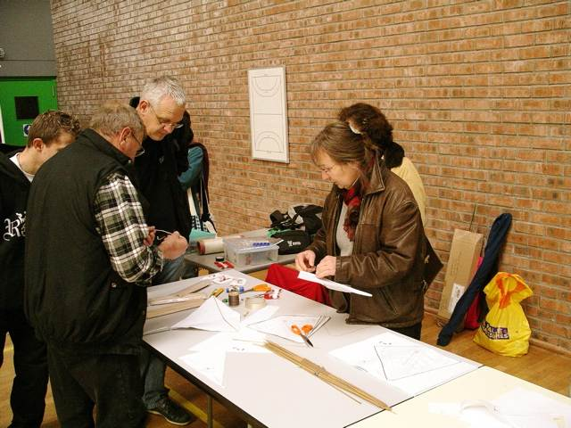
On prépare aussi l'atelier, pour des cerfs-volants papier légers. On fait un essai de prototype pour voir si tout marche et expliquer aux "monteuses" la procédure.

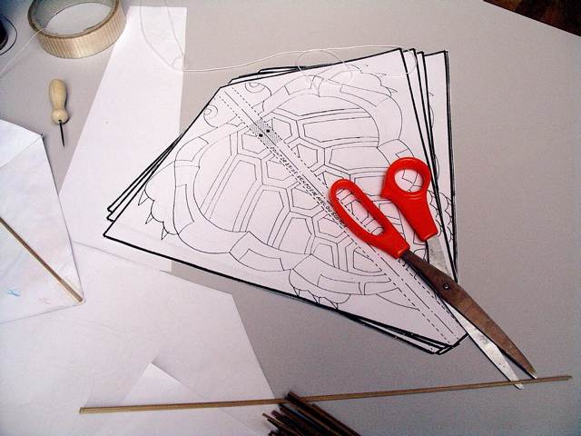
Le CV est en papier, avec seulement une latte transversale en bambou, courbée au briquet (si on ne la brûle pas !). Le longeron est juste un pli collé du papier, léger, non ? Mais ça résiste très bien. Et puis des feutres, pour mettre de la couleur sur tout ça...

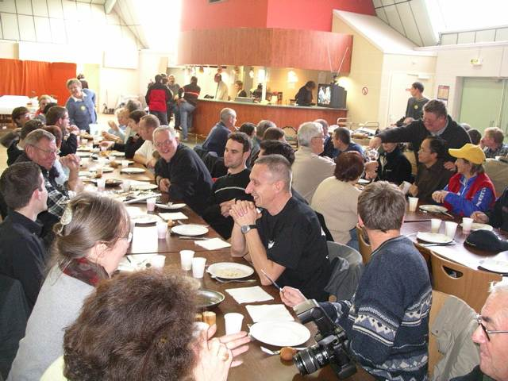
Tout est prêt, on peut aller déjeuner tranquille avec les autres Téléthonistes, en particulier des VTTistes qui rouleront même de nuit ! Au menu, tripes et frites ! Le soir, soirée bavaroise dans la salle. Mais mon inscription est tombée dans une trappe... bouh !

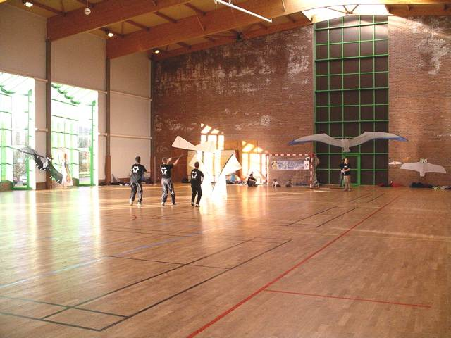
Retour au boulot ! Les Crazy Drivers s'amusent comme des fous à faire des trucs incroyables, comme leur figure finale en forme de logo...

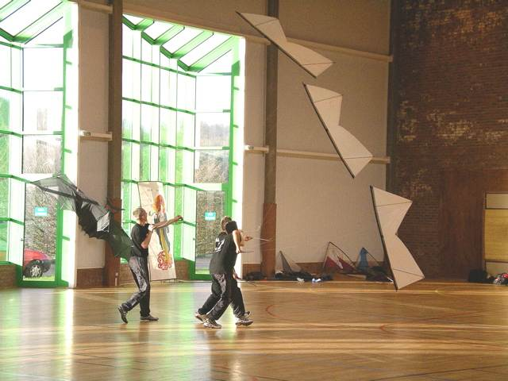
Ils arrivent à tourner en rond à 3, Fabrice, Jeremy et Damien, avec les croisements nécessaires et tout !

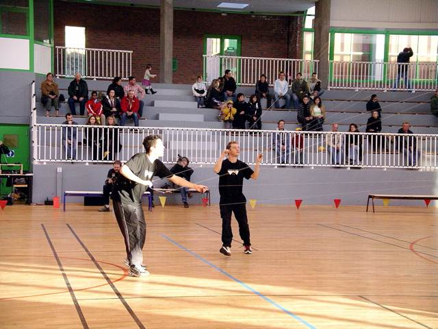
Damien et Jeremy font aussi un show à deux de bonne facture...

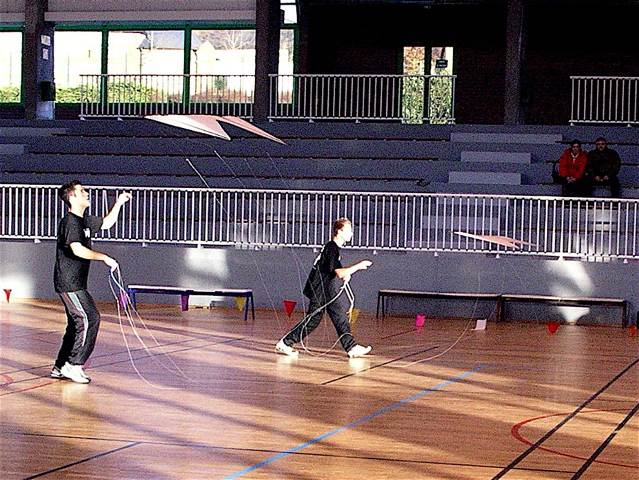
...avec rattrapage du Révo à la main, ou même quelquefois quand ça se présente bien, avec les dents !

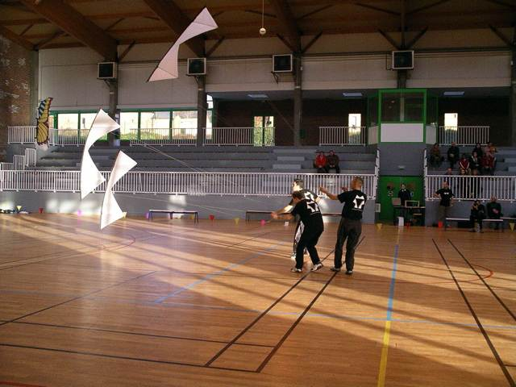
Et c'est reparti à trois, dans un soleil naissant qui illumine les ballets ! De mon côté, je fais voler le Harfang, la raie Manta, et les petits papier-bambou : Bi et BambouBird...

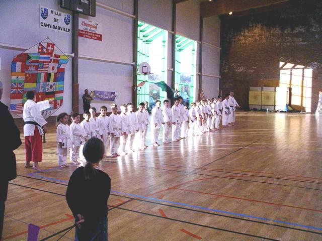
Nous libérons la place pour les judokas en herbe. Les plus petits sont toujours les plus amusants !

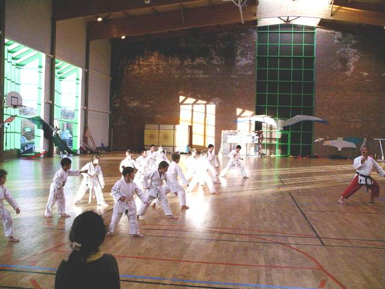
Ils font pleins de Katas, un peu à l'imitation du prof, on sent qu'ils n'ont pas tous bien révisé ! (à moins qu'ils ne cherchent Tatie dans l'assistance...).

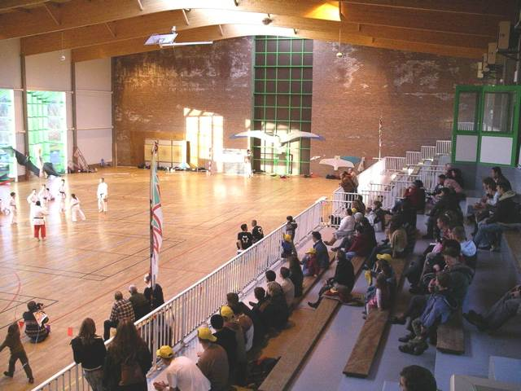
Il y a pas mal de public, cet après-midi. Mais sans doute les parents des judokas sont-ils venus grossir les rangs, restons modestes !

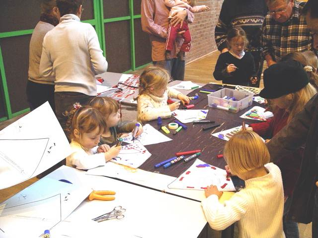
Pendant ce temps, l'atelier ne s'est pas arrêté de tourner, et on sent un sérieux et une concentration !
Pour finir, on démonte, je ferai un petit aller-retour avec Megoel pour clôturer ! Il est assez léger, finalement, il n'y a pas besoin de courir vite, et je pourrais voler s'il n'y avait pas les virages à faire...
Bon, on s'est bien amusés, et c'était pour la bonne cause. Moi, je ne ferai pas la fête ce soir, je vais me coucher tôt dans mon camion pour faire du tourisme demain matin. Je me lève à 8 h, il y a du givre sur les vitres, heureusement, j'ai un bon duvet...

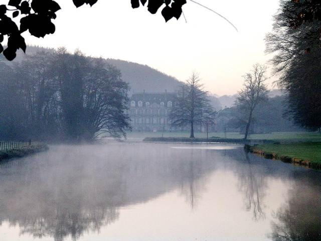
Je commence par le château de Cany. On ne visite plus à cette époque de l'année, on ne peut le voir que de loin, ça crée un parfum de mystère...

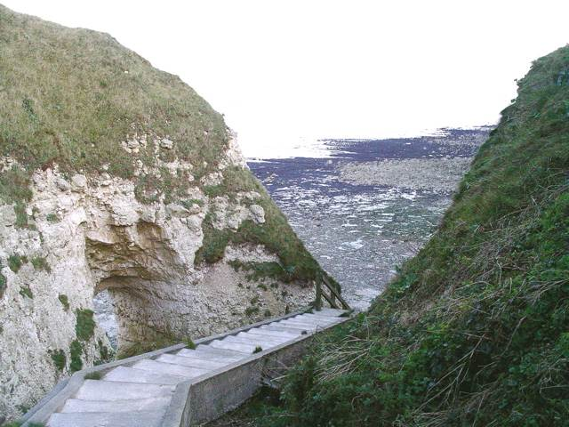
Puis je pars vers la côte entre Fécamp et Veulettes. Je visite une première valleuse à Eletot. Ca commence tranquille, on descend une vallée en voiture, on se gare et on commence la descente à pied, fastoche ! L'escalier devient raide, et on est face à la pente...

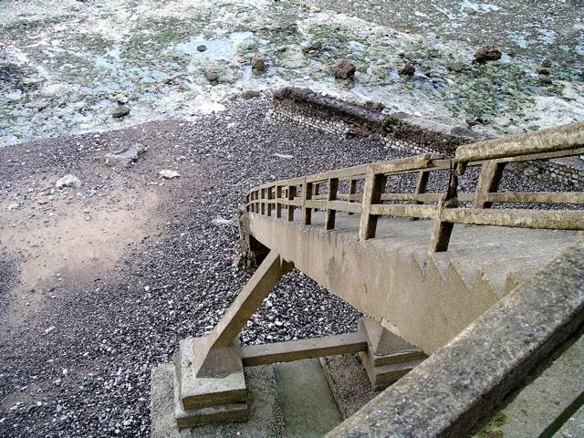
Les marches sont de plus en plus raides, et ça se termine avec un escalier aérien en béton pas très rassurant, qui a résisté aux tempêtes jusque là, mais pour combien de temps encore ?

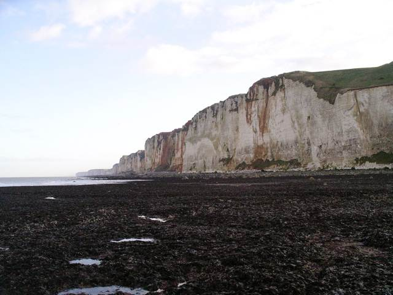
En bas, on est sur la "plage", enfin, sur le plateau rocheux qui reste, ici, il y avait 100 m de terrain calcaire au-dessus de ma tête avant que la mer ne s'y attaque ! De là, derrière, les falaises qui reculent doucement. A droite des parois, verticales, plus qu'impressionnantes !

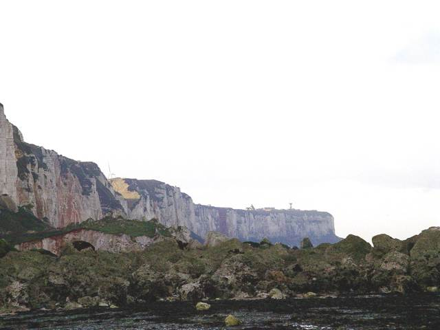
A gauche, vers Fécamp, par-dessus des débris qui résistent encore, pareil, avec les éoliennes en haut...

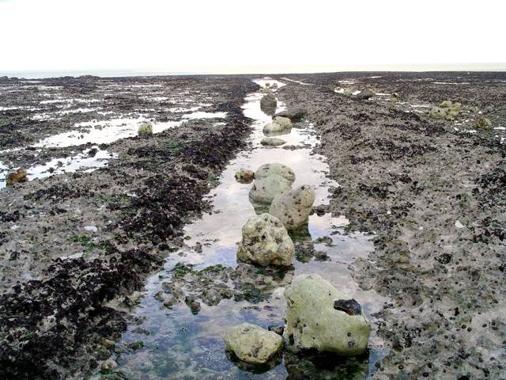
Au niveau des marées, la mer a tout rasé, sauf d'énormes silex qui se sont quand même arrondis et ont creusé le calcaire à chaque marée...

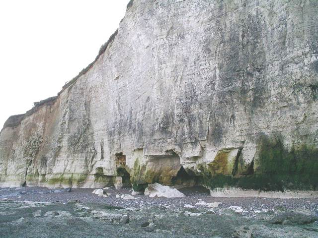
Sur quoi tient la falaise ? Parfois sur pas grand-chose, sur quelques piliers qui restent entre les grottes où la mer vient exploser à chaque marée.

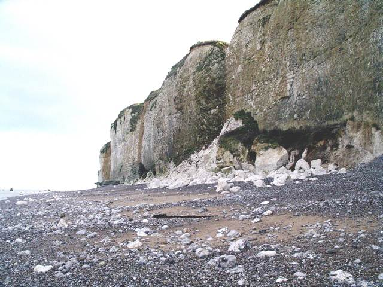
Il y a même des fois où ça s'écroule ! Bon, les éboulis protègent pendant un moment...

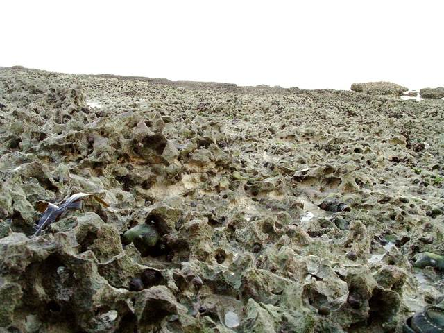
Sur le plateau même, comme si la mer ne suffisait pas, des patelles viennent creuser leurs niches et transformer le sol en dentelle !

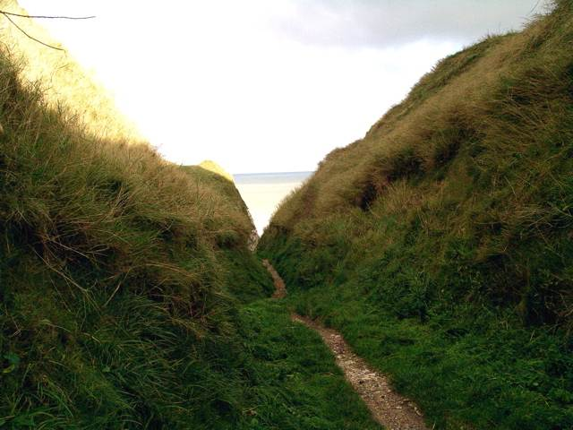
Bon, je remonte, ça m'a impressionné, je vais voir encore de petites plages qui sont presque des valleuses, et puis j'en trouve une autre, une vraie, vers St-Martin-aux-Buneaux. Là aussi, ça commence doucement, par un petit sentier dans une gorge anodine...

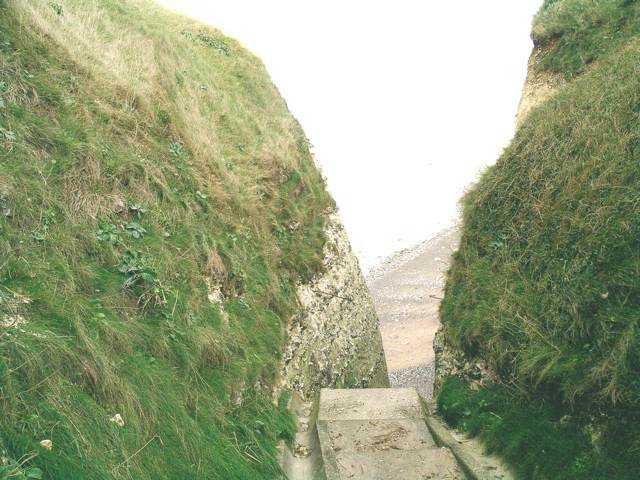
Et puis, on est encore bien haut au-dessus de la mer... La pente s'accentue, des marches en béton de loin en loin, "défense de descendre", bof, ça a l'air solide...

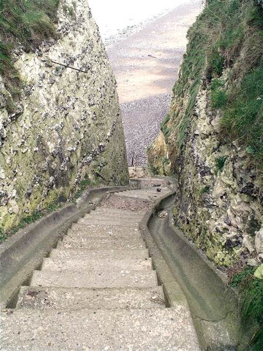
Mais on est encore très haut, et les marches sont de plus en plus petites... Mais je ne vois pas comment un escalier pourrait permettre de descendre, peut-être est-il cassé ? Allez, on verra bien, mais j'avance prudemment !

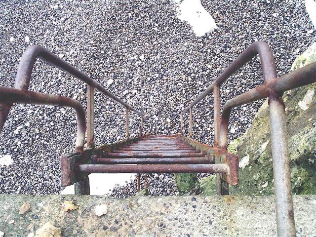
Ah ben d'accord, il y a une échelle, et vraiment verticale. Mais c'est du gros fer, malgré la corrosion, il en reste assez pour avoir confiance...

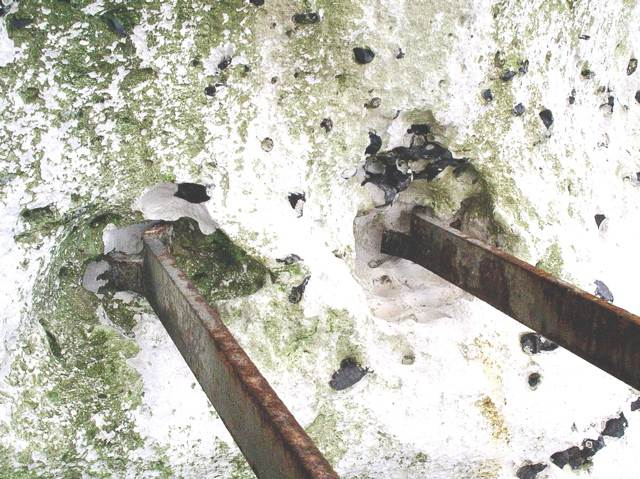
D'ailleurs, arrivé en bas, je vois qu'il y avait des ancrages solides... Enfin, avant que la mer ne détruise le béton qui a l'air d'avoir été plus soluble que le calcaire !

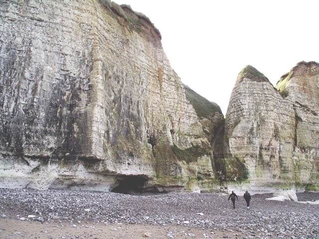
En bas, belle "plage", enfin, des galets de silex, avec quelques grains de sable par-ci par-là ! Bon, va encore falloir remonter tout ça. J'ai pas compté les marches, mais les valleuses, avec deux ça ira pour aujourd'hui...

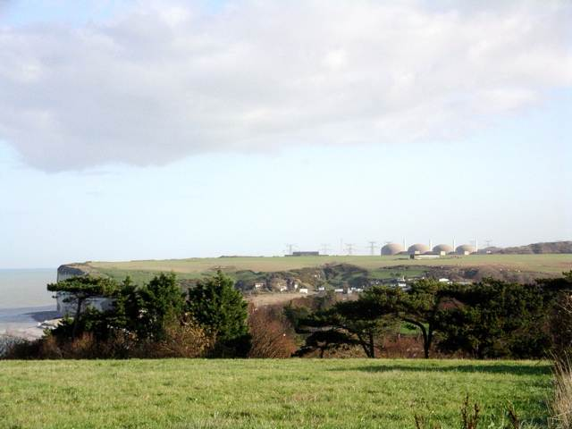
Cap sur Veulettes pour déjeuner. Au-delà, sur le plateau, la centrale de Palluel. Pour la vue, c'est plus discret que les éoliennes, mais c'est pas très esthétique quand même...

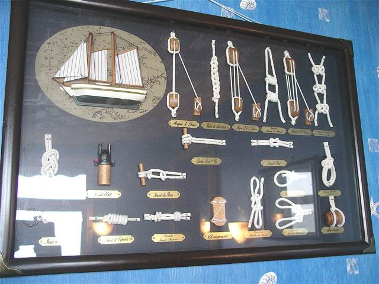
Pour récupérer, déjeuner dans un petit restau avec vue panoramique sur la plage, la mer, les falaises, et pour les techniciens, plein de planches de noeuds...

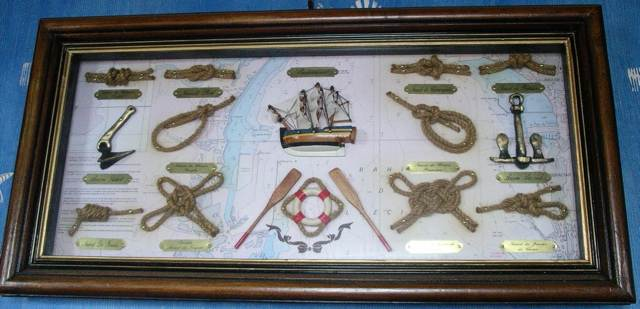
Bon, je recueille tout ça, j'étudierai plus tard à tête reposée...

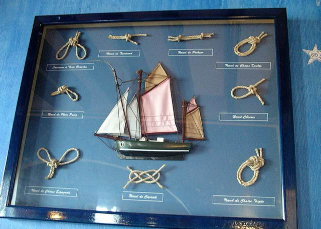
Et en sortant, encore une planche différente !

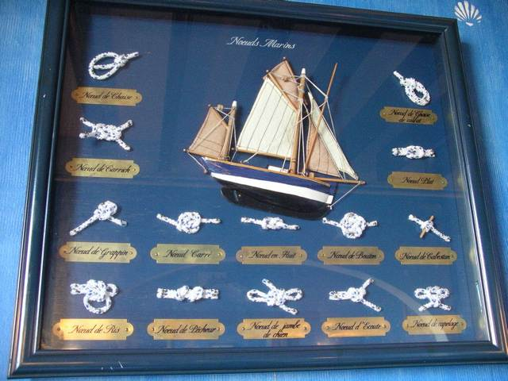
On voit que les marins avaient quelquefois pas mal d'heures de libres, parce qu'il y en a dont l'utilité ne me semble pas évidente !

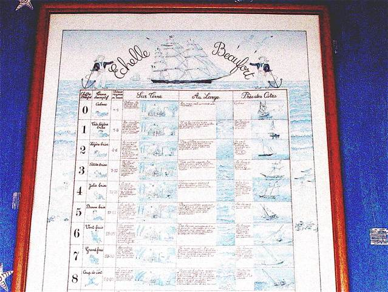
Il y a aussi une échelle de Beaufort enluminée et très renseignée avec les critères au large, près des côtes, et dans les terres...

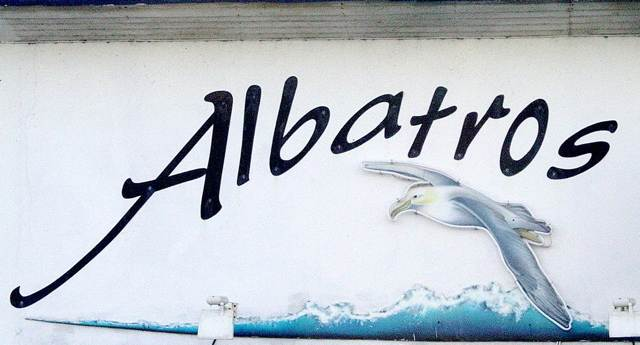
Et dehors, un grand Albatros sert d'enseigne à une taverne. Bon, c'est un signe, je sors Megoel, et je vais voler une heure sur la plage de Veulettes, dans un vent moyen et un beau soleil. J'en tire comme enseignement qu'il faudra que je retende la toile qui s'est pas mal allongée et le rend instable...
Finalement, on a fait une bonne oeuvre, mais on s'est bien amusés. Pour moi, un beau week-end, mi-cerf-volant, mi-touristique ! Si vous passez par là (par exemple en allant à Fécamp à Estivoiles l'an prochain...), je vous recommande de ne pas rater la valleuse d'Eletot, la plus impressionnante...